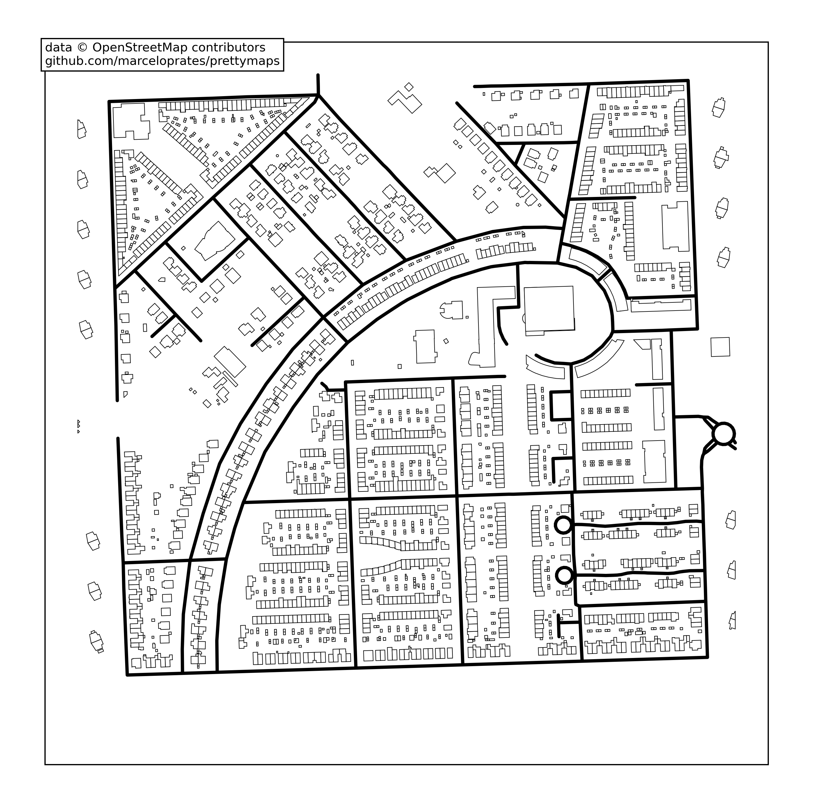
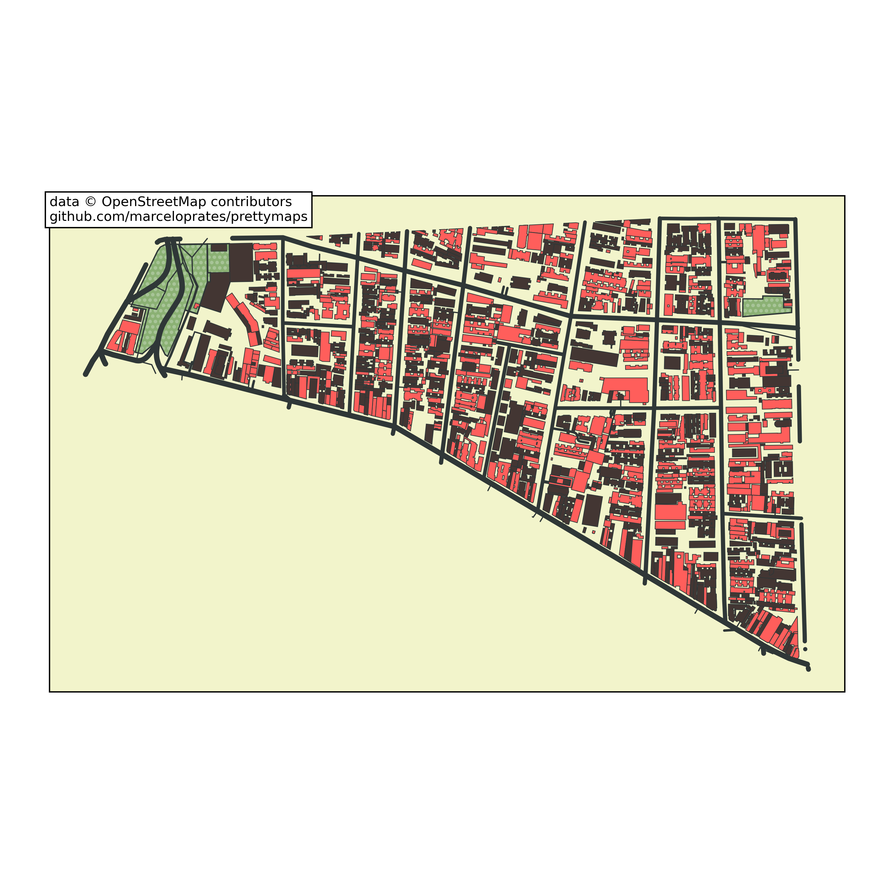
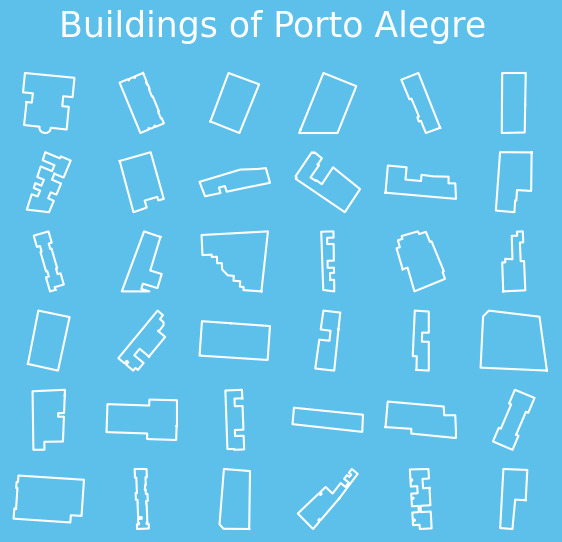
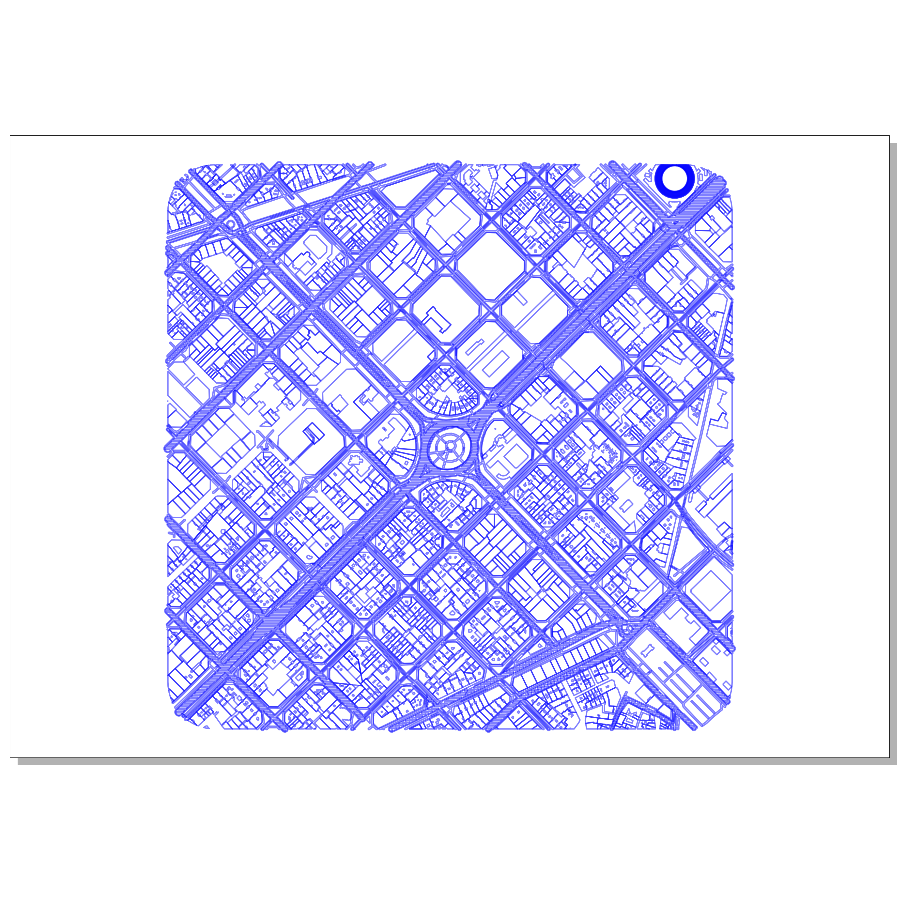
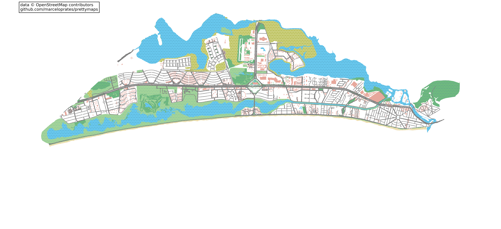
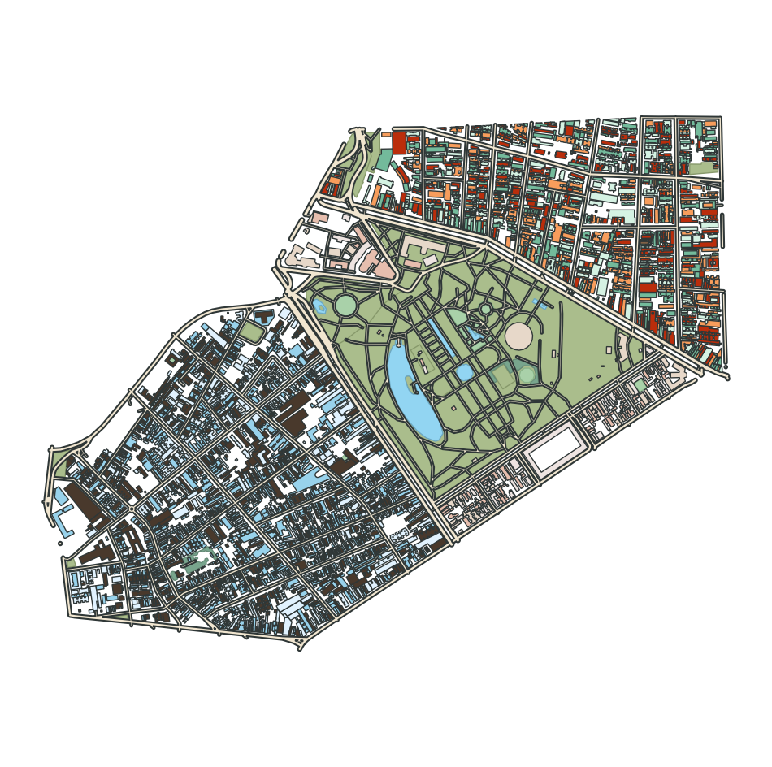
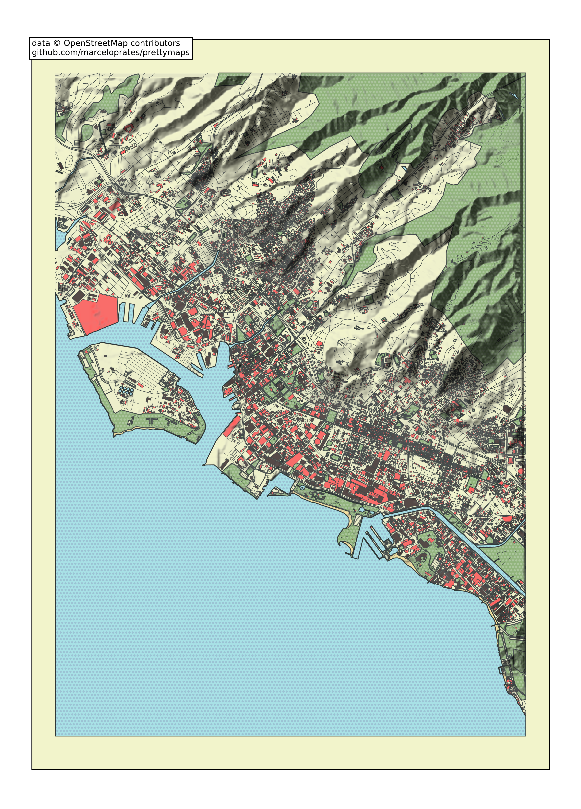
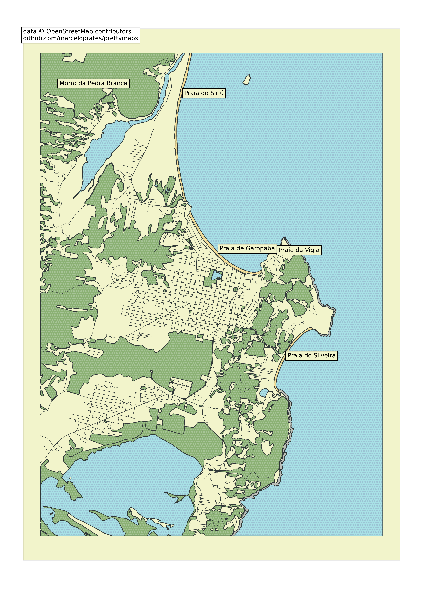

prettymaps Tutorial
A minimal Python library to draw customized maps from OpenStreetMap created using the osmnx, matplotlib, shapely and vsketch packages.

This tutorial is generated from notebooks/tutorial.py, a marimo notebook. To run it interactively:
uv run --with marimo marimo edit notebooks/tutorial.py
Or with the locally installed copy:
.venv/bin/marimo edit notebooks/tutorial.py
Installation
Install locally
pip install prettymaps
Install on Google Colaboratory
!pip install -e "git+https://github.com/marceloprates/prettymaps#egg=prettymaps"
Then restart the runtime (Runtime -> Restart Runtime) before importing prettymaps.
Run front-end
After prettymaps is installed, you can run the front-end (streamlit) application from the prettymaps repository using:
streamlit run app.py
Plotting
Plotting with prettymaps is very simple. Run:
prettymaps.plot(your_query)
your_query can be:
- An address (Example:
"Porto Alegre"), - Latitude / Longitude coordinates (Example:
(-30.0324999, -51.2303767)), - A custom boundary in GeoDataFrame format.
Default preset
import prettymaps
plot = prettymaps.plot('Stad van de Zon, Heerhugowaard, Netherlands')
Presets
You can also choose from different "presets" (parameter combinations saved in JSON files). See below an example using the "minimal" preset:
plot = prettymaps.plot(
'Stad van de Zon, Heerhugowaard, Netherlands',
preset='minimal',
)

Run prettymaps.presets() to list all available presets. To inspect a specific preset, run prettymaps.preset('default').
Customizing parameters
Instead of using the default configuration you can customize several parameters. The most important are:
layers— A dictionary of OpenStreetMap layers to fetch.- Keys: layer names (arbitrary)
- Values: dicts representing OpenStreetMap queries
style— Matplotlib style parameters- Keys: layer names (the same as before)
- Values: dicts representing Matplotlib style parameters
plot = prettymaps.plot(
your_query,
layers,
style,
preset,
save_preset,
update_preset,
circle,
radius,
dilate,
)
plot is a Python dataclass containing:
@dataclass
class Plot:
geodataframes: Dict[str, gp.GeoDataFrame]
fig: matplotlib.figure.Figure
ax: matplotlib.axes.Axes
Here's an example of running prettymaps.plot() with customized parameters (Macau):
plot = prettymaps.plot(
'Praça Ferreira do Amaral, Macau',
circle=True,
radius=1100,
layers={
"green": {
"tags": {
"landuse": "grass",
"natural": ["island", "wood"],
"leisure": "park",
}
},
"forest": {"tags": {"landuse": "forest"}},
"water": {"tags": {"natural": ["water", "bay"]}},
"parking": {
"tags": {
"amenity": "parking",
"highway": "pedestrian",
"man_made": "pier",
}
},
"streets": {
"width": {
"motorway": 5, "trunk": 5, "primary": 4.5,
"secondary": 4, "tertiary": 3.5, "residential": 3,
}
},
"building": {"tags": {"building": True}},
},
style={
"background": {"fc": "#F2F4CB", "ec": "#dadbc1", "hatch": "ooo..."},
"perimeter": {"fc": "#F2F4CB", "ec": "#dadbc1", "lw": 0, "hatch": "ooo..."},
"green": {"fc": "#D0F1BF", "ec": "#2F3737", "lw": 1},
"forest": {"fc": "#64B96A", "ec": "#2F3737", "lw": 1},
"water": {
"fc": "#a1e3ff", "ec": "#2F3737",
"hatch": "ooo...", "hatch_c": "#85c9e6", "lw": 1,
},
"parking": {"fc": "#F2F4CB", "ec": "#2F3737", "lw": 1},
"streets": {"fc": "#2F3737", "ec": "#475657", "alpha": 1, "lw": 0},
"building": {
"palette": ["#FFC857", "#E9724C", "#C5283D"],
"ec": "#2F3737", "lw": 0.5,
},
},
)

Plot an entire region
To plot an entire region (not just a rectangular or circular area), set radius=False:
plot = prettymaps.plot('Bom Fim, Porto Alegre, Brasil', radius=False)

Access GeoDataFrames directly
You can access a layer's GeoDataFrame directly:
plot = prettymaps.plot('Centro Histórico, Porto Alegre', show=False)
plot.geodataframes['building']
Search by name
Search a building by name and display it:
plot.geodataframes['building'][
plot.geodataframes['building'].name
== 'Catedral Metropolitana Nossa Senhora Mãe de Deus'
].geometry[0]
Mosaic of building footprints
import numpy as np
import osmnx as ox
from matplotlib import pyplot as plt
plot = prettymaps.plot('Porto Alegre', show=False)
buildings = plot.geodataframes['building']
buildings = ox.projection.project_gdf(buildings)
buildings = [b for b in buildings.geometry if b.area > 0]
n = 6
fig, axes = plt.subplots(n, n, figsize=(7, 6))
fig.patch.set_facecolor('#5cc0eb')
fig.suptitle('Buildings of Porto Alegre', size=25, color='#fff')
for ax, building in zip(np.concatenate(axes), buildings):
ax.plot(*building.exterior.xy, c='#ffffff')
ax.autoscale(); ax.axis('off'); ax.axis('equal')

Customizing the matplotlib axes
Access plot.ax or plot.fig to add new elements to the matplotlib plot:
plot = prettymaps.plot(
(41.39491, 2.17557),
preset='barcelona',
show=False,
)
plot.fig.patch.set_facecolor('#F2F4CB')
plot.ax.set_title('Barcelona', font='serif', size=50)
Plotter mode
Use plotter mode to export a pen plotter-compatible SVG (thanks to abey79's amazing vsketch library):
plot = prettymaps.plot(
(41.39491, 2.17557),
mode='plotter',
layers=dict(perimeter={}),
preset='barcelona-plotter',
scale_x=0.6,
scale_y=-0.6,
)

Other examples
plot = prettymaps.plot(
'Barra da Tijuca',
dilate=0,
figsize=(22, 10),
preset='tijuca',
adjust_aspect_ratio=False,
)

Create a preset
Use prettymaps.create_preset() to create a preset:
prettymaps.create_preset(
"my-preset",
layers={
"building": {
"tags": {"building": True, "leisure": ["track", "pitch"]},
},
"streets": {
"width": {
"trunk": 6, "primary": 6, "secondary": 5,
"tertiary": 4, "residential": 3.5,
"pedestrian": 3, "footway": 3, "path": 3,
}
},
},
style={
"perimeter": {"fill": False, "lw": 0, "zorder": 0},
"streets": {"fc": "#F1E6D0", "ec": "#2F3737", "lw": 1.5, "zorder": 3},
"building": {"palette": ["#fff"], "ec": "#2F3737", "lw": 1, "zorder": 4},
},
)
prettymaps.preset('my-preset')
Multiplot
Use prettymaps.multiplot and prettymaps.Subplot to draw multiple regions on the same canvas:
plot = prettymaps.multiplot(
prettymaps.Subplot(
'Cidade Baixa, Porto Alegre',
style={'building': {'palette': ['#49392C', '#E1F2FE', '#98D2EB']}},
),
prettymaps.Subplot(
'Bom Fim, Porto Alegre',
style={'building': {'palette': ['#BA2D0B', '#D5F2E3', '#73BA9B', '#F79D5C']}},
),
prettymaps.Subplot(
'Farroupilha, Porto Alegre',
layers={'building': {'tags': {'building': True}}},
style={'building': {'palette': ['#EEE4E1', '#E7D8C9', '#E6BEAE']}},
),
preset='cb-bf-f',
figsize=(12, 12),
)

Add hillshade
plot = prettymaps.plot(
'Honolulu',
radius=5500,
figsize='a4',
layers={
'hillshade': {
'azdeg': 315,
'altdeg': 45,
'vert_exag': 1,
'dx': 1,
'dy': 1,
'alpha': 0.75,
},
},
)

Add keypoints
plot = prettymaps.plot(
'Garopaba',
radius=5000,
figsize='a4',
layers={'building': False},
keypoints={
'tags': {'natural': ['beach']},
'specific': {
'pedra branca': {'tags': {'natural': ['peak']}},
},
},
)
